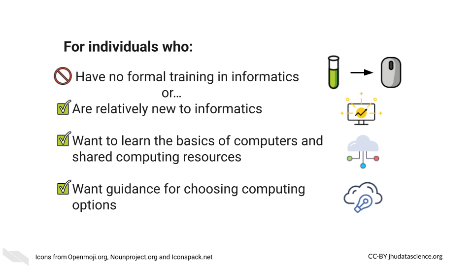
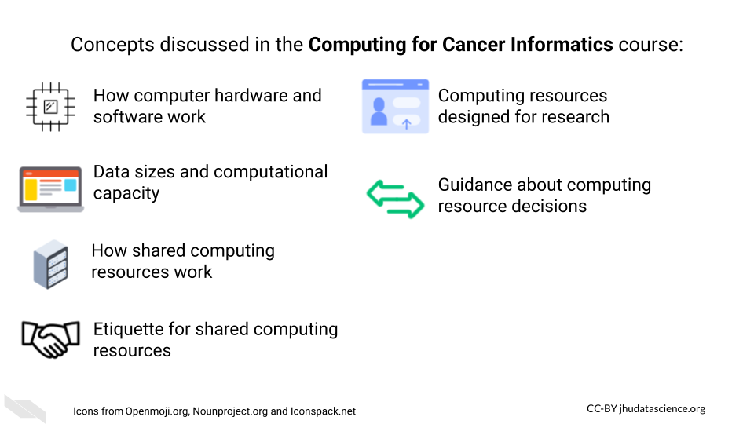

This course is designed to help investigators understand more about computing basics, as well as familiarize researchers with various computing platform options.
This course is one of our Tools & Resources courses.
This course was launched on Aug 2023.
| Book version (on a website) | Leanpub | Coursera |
|---|---|---|
| Free for learners No login required |
Free or fee for learners |
Membership fee for learners |
| No certification |
Includes certification of completion |
Includes certification of completion |
| https://jhudatascience.org/Computing_for_Cancer_Informatics | https://leanpub.com/universities/courses/jhu/cancer-informatics-computing | https://www.coursera.org/learn/computing-for-cancer-informatics |
Our courses are open-source and source material can be accessed on GitHub: https://github.com/jhudsl/Computing_for_Cancer_Informatics

We particularly recommend this course for those who are Researchers.
